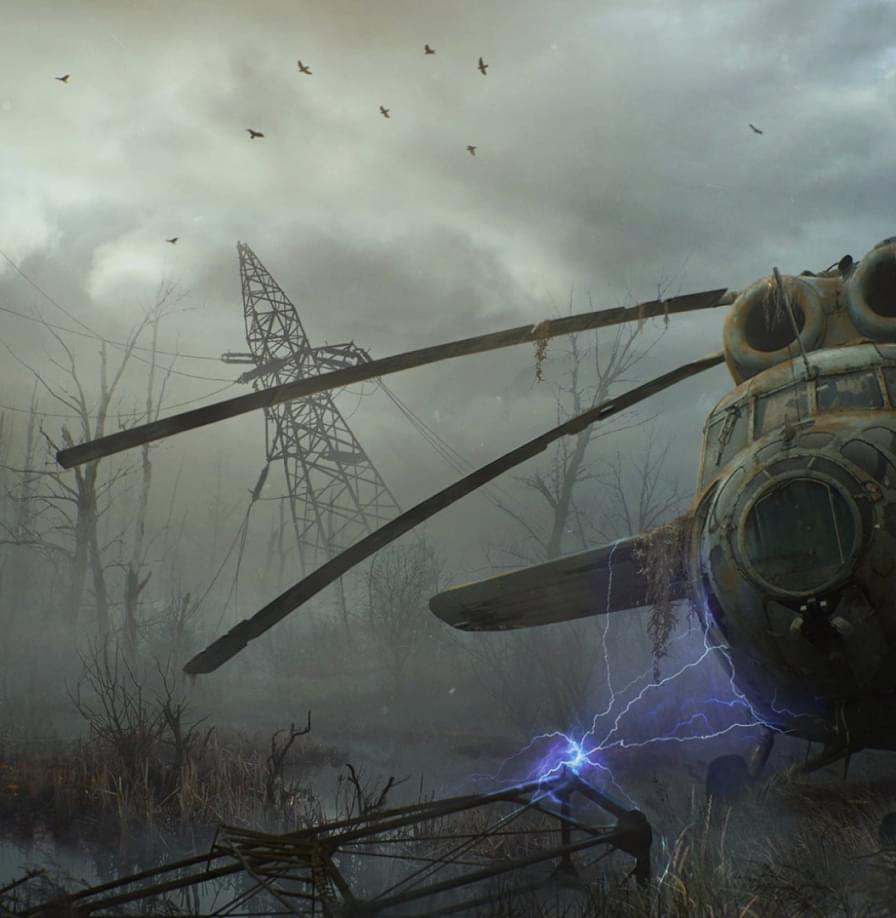

Onze spellen zijn bedoeld voor een VOLWASSEN publiek ouder dan 18 jaar. Klikken de Geaccepteerd om uw leeftijd te bevestigen.
S.T.A.L.K.E.R. - dit is een serie games van de Oekraïense studio MUTANTS, die erin slaagde een enorm leger fans over de hele wereld te winnen.
S.T.A.L.K.E.R
De game is een mix van first-person shooter, RPG en horror, en de plot speelt zich af in de Zone - een gevaarlijk gebied waar zich een ramp heeft voorgedaan en nu gebeuren daar vreemde dingen, zoals gemuteerde monsters en legendarische artefacten.
Over. het. spel.

S.T.A.L.K.E.R. is een klassieke horror-shooter die meer dan 10 jaar geleden op pc werd uitgebracht. Met de nieuwe versie van de game op PS5 en PS4 kunnen spelers echter opnieuw de sombere sfeer van de Zone waarderen en opnieuw geconfronteerd worden met mutanten en bandieten.
Ondanks het feit dat de game lang geleden is uitgebracht, is nu S.T.A.L.K.E.R. heeft een hoge waardering onder de bijgewerkte horror-shooters en is een van de beste games in zijn genre.
Spelers kunnen genieten van verbeterde graphics en vloeiendere gameplay op nieuwe platforms. Bovendien heeft de lancering van S.T.A.L.K.E.R. aanzienlijk sneller en probleemloos dan oudere platforms.
Als je een fan bent van horror-shooters, S.T.A.L.K.E.R. is een spel dat je niet mag missen. Met de nieuwe versies van de game op PS5 en PS4 kun je jezelf onderdompelen in de Zone, veel nieuwe personages en evenementen ontdekken en de game opnieuw spelen met verbeterde gameplay.
S.T.A.L.K.E.R.: Call of Pripyat is een voortzetting van het verhaal van de eerste twee games die in 2010 werden uitgebracht. De plot van de game speelt zich af na de gebeurtenissen van de eerste game en spelers zullen de mysterieuze verdwijning van een groep Stalkers in het gebied van de Pripyat Zone moeten onderzoeken. De game introduceert nieuwe locaties en spelmechanismen, wat de game spannender en interessanter maakt.
Hoewel de eerste S.T.A.L.K.E.R. lang geleden zijn uitgebracht, zijn ze nog steeds erg populair onder de spelers en krijgen ze hoge cijfers van critici. Hun unieke sfeer, meedogenloze wereld en prachtige gameplay blijven nieuwe fans naar de serie trekken, en de langverwachte S.T.A.L.K.E.R. 2 wordt zeker groter en groter.
Met nieuwe updates is S.T.A.L.K.E.R. nog interessanter geworden! En dankzij de verhoogde rating van de beste spelers zijn de gevechten in de Zone nog spannender geworden.
Klaas Bosman
5.0
We zijn erg blij met de nieuwe functies en mogelijkheden in S.T.A.L.K.E.R. - de ontwikkelaars worden nooit moe van het verbeteren van het spel. En het is leuk om te zien dat het een plaats in de top van de beoordeling van de besten inneemt!
Herman Visser
5.0
Nieuwe monsters, nieuwe uitrusting, nieuwe locaties... S.T.A.L.K.E.R. blijft zijn fans verrassen. Het is geen verrassing dat de game in de topscores van de beste gamecritici blijft staan.
Simon Van Der Wal
5.0
De nieuwe updates van S.T.A.L.K.E.R. voegen niet alleen meer inhoud toe, maar vullen ook de bestaande aan, verbeteren de gameplay en experimenteren met verschillende functies.
Nathalie Brander
5.0
S.T.A.L.K.E.R. is een spel dat zijn fans blijft verrassen met elke nieuwe update. En als het bovenaan de ranglijst van de beste staat, is dat geen wonder, want de ontwikkelaars doen er alles aan om spelers gelukkig te maken.
Emma De Clercq
5.0
Nieuwe updates voor S.T.A.L.K.E.R. maken het spel nog spannender en unieker. En het is geweldig om te zien dat het zijn rechtmatige plaats inneemt in de ranglijst van de beste spelers!